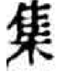
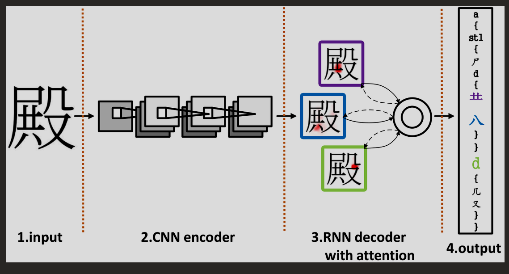
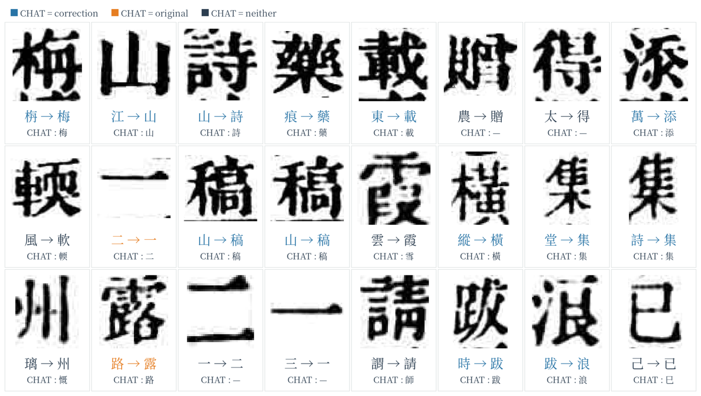

Same class, different looks:

集Different classes, near-identical looks:
未 末 · 己 已 巳 · 呆 杏
Train on m handwritten classes (500 to 2,755). Test on 1,000 classes never seen. Fewer training classes = harder.
Read the image, write out its tree, look it up in a dictionary.
≈ image captioning
Turn each tree into a fixed vector; train the image network to hit it.
≈ attribute-based zero-shot
Learn an encoder for the tree too, and match images to trees.
≈ CLIP

RAN / DenseRAN 2018 → RSST 2024 → CDC-RAN 2025
one dimension per radical / operator; $d$ = depth in the tree; $\alpha=\lambda=\tfrac12$
| 森 = ⿱ 木 ⿰ 木 木 | depth | adds |
|---|---|---|
| ⿱ | 0 | $\lambda\alpha^0 = 0.5$ to $e_{⿱}$ |
| 木 (top) | 1 | $\alpha^1 = 0.5$ to $e_{木}$ |
| ⿰ | 1 | $\lambda\alpha^1 = 0.25$ to $e_{⿰}$ |
| 木, 木 | 2 | $2\alpha^2 = 0.5$ to $e_{木}$ |
⇒ $\varphi(森)$: 木 = 1.0, ⿱ = 0.5, ⿰ = 0.25, every other dim 0.
HDE 2020 → CUE 2023 → HierCode 2025 → JRED 2025
train the image network $f$ on seen classes; unseen ones only need their $\varphi$.
OpenCCD CVPR 2022 → PCSS 2024
On the next chart it is drawn dashed: each unseen class comes with a printed glyph the tree methods never see, so it is not a like-for-like comparison.
HWDB → ICDAR 2013, Top-1. GRSTR, GL-HPN, Hi-GITA, OpenCCD tables. Dashed: given a printed glyph per unseen class.
Run on a real Qing-dynasty volume: 770 pages, no ground truth.
